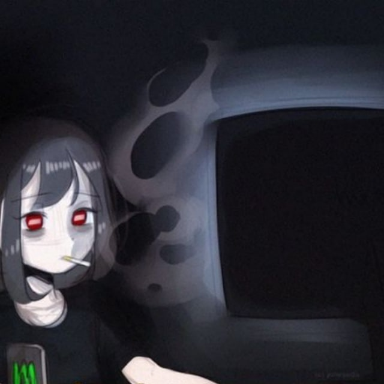

obey
The True Don
$$$$$$\ $$$$$$$\ $$$$$$$$\ $$\ $$\
$$ __$$\ $$ __$$\ $$ _____|\$$\ $$ |
$$ / $$ |$$ | $$ |$$ | \$$\ $$ /
$$ | $$ |$$$$$$$\ |$$$$$\ \$$$$ /
$$ | $$ |$$ __$$\ $$ __| \$$ /
$$ | $$ |$$ | $$ |$$ | $$ |
$$$$$$ |$$$$$$$ |$$$$$$$$\ $$ |
\______/ \_______/ \________| \__|
The True Don
Now Playing: